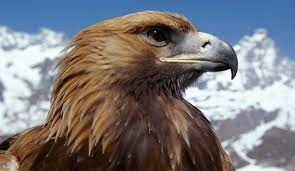

Majestuosas, sigilosas, veloces, inteligentes y hábiles: si el mar es de los tiburones y la sabana de los leones, la hegemonía del reino de los cielos es delas águilas. Pertenecientes a las familia Accipitridae, este tipo de aves sobrevuelan los cielos de todo el mundo excepto los antárticos.
Cuentan con un pico fuerte y robusto acabado en punta y hacia abajo que les facilita la tarea de separar los pedazos de carne de sus víctimas. También gozan de un sentido de la vista extraordinario con el que pueden divisar a sus presas a grandes distancias y además, sus potentes y robustas garras les permiten atrapar animales más grandes que ellas y trasladarlos por el aire.
Numerosas especies de águilas se encuentran en la actualidad en peligro de extinción debido a la progresiva pérdida de hábitats, la ausencia de presas e incluso en algunos lugares la actividad de los cazadores. Un ejemplo de ello es el águila imperial blanca, una de las especies en peligro de extinción en España.
Sigue con Hombres y águilas, una alianza ancestral

Las cacerías de los cetreros se producen principalmente por las pieles, no por carne. Esta piel es una parte integral
de la vestimenta tradicional kazaja, ya que las temperaturas en el invierno oscilan entre menos -20ºC y -45 ºC. Se cazan
varios animales por su piel, incluidos conejos, liebres, marmotas, zorros rojos, corsacs, gatos monteses y lobos".
Se necesitan muchos años para entrenar al águila real. De hecho, solo se entrena a las águilas reales hembra jóvenes, ya que son más grandes, más poderosas y agresivas que los machos, y pueden alcanzar una envergadura de 2, 3 metros y un peso de hasta 7 kilogramos cuando se desarrollan por completo..
Una de las características más destacadas de los elefantes de sabana es, sin duda, su enorme trompa y sus grandes orejas.
Las orejas miden unos 183 centímetros de largo por 114 centímetros de ancho, mucho más grandes que las del elefante asiático,
que solo alcanzan los 60 centímetros de largo. El gran tamaño de las orejas es de gran ayuda a la hora de regular la
temperatura corporal.
Para más información: